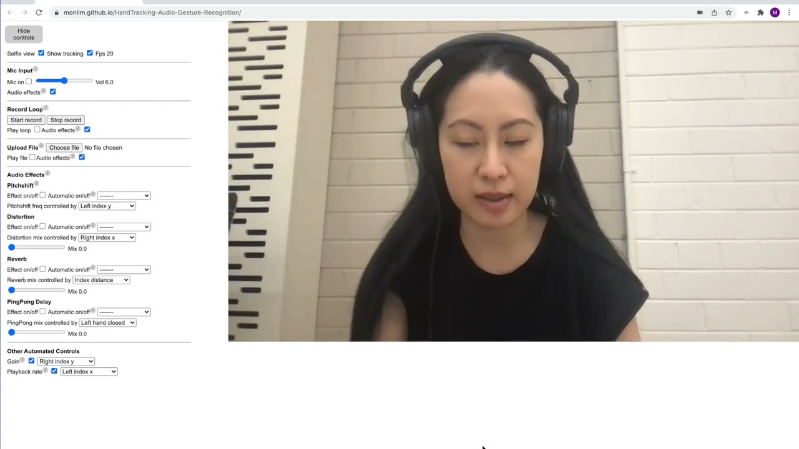
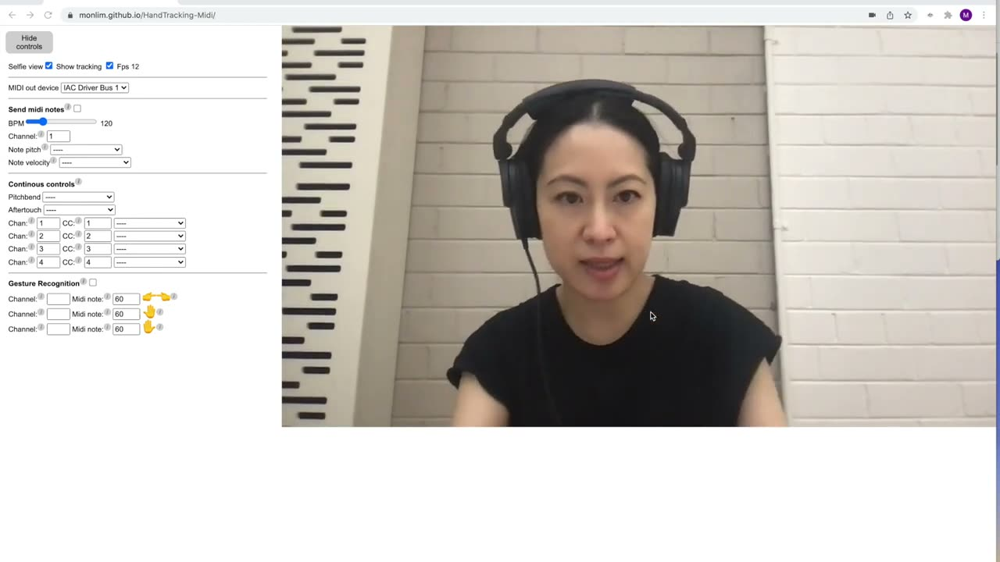

Handmate: An Accessible Browser-based Controller for Web Audio and Midi using AI Hand-Tracking
Handmate: An Accessible Browser-based Controller for Web Audio and Midi using AI Hand-Tracking
Author(s)
Monica Lim, University of Melbourne
Natalia Kotsani, University of Athens
Patrick Hartono, University of Melbourne (Editor)
PubPub Link
https://nime.pubpub.org/pub/omb6e716/draft?access=22gwitrj
Abstract
Handmate is a browser-based hand gestural controller for Web Audio and MIDI using open-source pose estimation technology from Google MediaPipe. The web browser was chosen as the platform to execute all computational processes so that users can access the latest computer vision technology for music-making without requiring any specialised hardware, software or technical expertise. Its innovation lies in combining pre-existing technologies together in a browser environment to enable accessible interactive sound-movement-making using hand movement. Two controllers are described. Handmate Effects, which receives microphone or user sound input and provides a choice of audio effects which can be controlled by hand movement, and Handmate MIDI, which outputs MIDI notes or control values.
Requirements
As Handmate is hosted on a web browser, users can access and try it out themselves. It can be accessed from:
Handmate Effects - https://monlim.github.io/Handmate-Effects/
Handmate MIDI - https://monlim.github.io/Handmate-MIDI/
It is recommended that users use Google Chrome as the web browser, as other browsers may not fully support Handmate’s features. In addition, the open source code can be accessed from:
Handmate Effects - https://github.com/monlim/Handmate-Effects
Handmate MIDI - https://github.com/monlim/Handmate-MIDI
Program Description
There is a long history of using body movement to control sound, from the Theremin and radio antennas through to tools such as motion capture and infrared cameras, accelerometers, gyroscopes and wearable gloves. Musicians and sound designers use these tools to create interactive systems and to enable a more intuitive way to manipulate sound. These systems mostly require specialist hardware and/or software to be acquired and implemented, which can be costly or technologically prohibitive.
However, recent advances in the speed and accuracy of body-tracking and pose estimation technology using machine learning (ML) across different platforms such as Python, Javascript, iOS and Android have enabled real-time processing of human movement and gestures using only camera input from webcams or mobile phones. They can also be accessed directly from the web browser, thereby negating any requirement to download programming dependencies or applications, which can often be another barrier to access.
These advances, combined with the ability for most web browsers to now process audio and MIDI, present an opportunity to create a movement-controlled interface for sound-making directly in the web browser. The advantages of this include being cost-free (other than access to the internet and a computer with webcam), ease of use (requiring no coding skills or specialist software) and the ability to traverse geographical boundaries, thereby creating potential for remote, distributed and interactive collaborations.
Handmate is a controller developed for two hands using Google MediaPipe’s palm detection and hand landmark model. The hand model was chosen rather than a whole-body pose or face model due to our general human ability for fine and precise motor control of our hands. Also, many controllers have previously been developed for hands, including commercial products such as Leap Motion, MiMU gloves and the Genki Wave Ring. Therefore, users may already be experienced in using hand gestures in their practices.
Handmate uses existing pre-trained ML pipelines, gesture recognition models such as Fingerpose.js and Web APIs including Tone.js and WebMidi.js. Its innovation lies in bringing these technologies together in a browser environment to enable accessible interactive sound-movement-making.
Media
Video demonstration of how to use Handmate Effects:

▶Handmate Effects Demo - MediaPipe Hand-Tracking and Gesture Recognition for Web Audio.
Video demonstration of how to use Handmate MIDI:

▶Handmate MIDI Demo - MediaPipe Hand-Tracking and Gesture Recognition for Web MIDI.
Acknowledgements
The authors would like to thank NIME for the mentorship program, under whose aegis this work has been developed.
The first author would like to thank Professor Mark Pollard and Mauricio Iregui from the University of Melbourne for their advice.